Inkscape & GIMP¶
Installation¶
Inkscape¶
Inkscape is a cross-plataform open-source software for vector image edition (You can think of it as the open source version of Adobe Illustrator). This means that we can use it for free in the major OSs. We can find the downloadable at the official webpage.
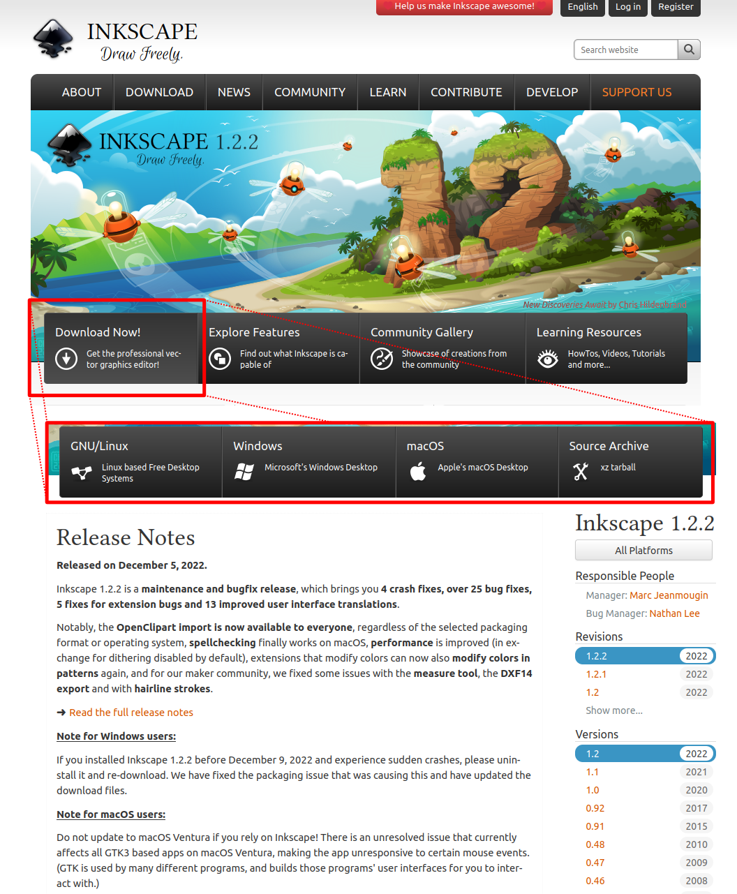
GIMP¶
GIMP (GNU Image Manipulation Program) is a cross-plataform open-source software. (You can think of it as the open source version of Photoshop). This means that we can use it for free in the major OSs. We can find the downloadable at the official webpage.
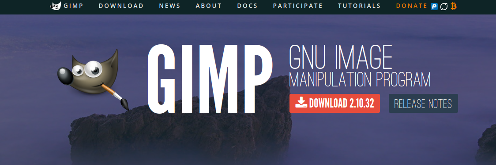
Inkscape Basics¶
Creating a path¶
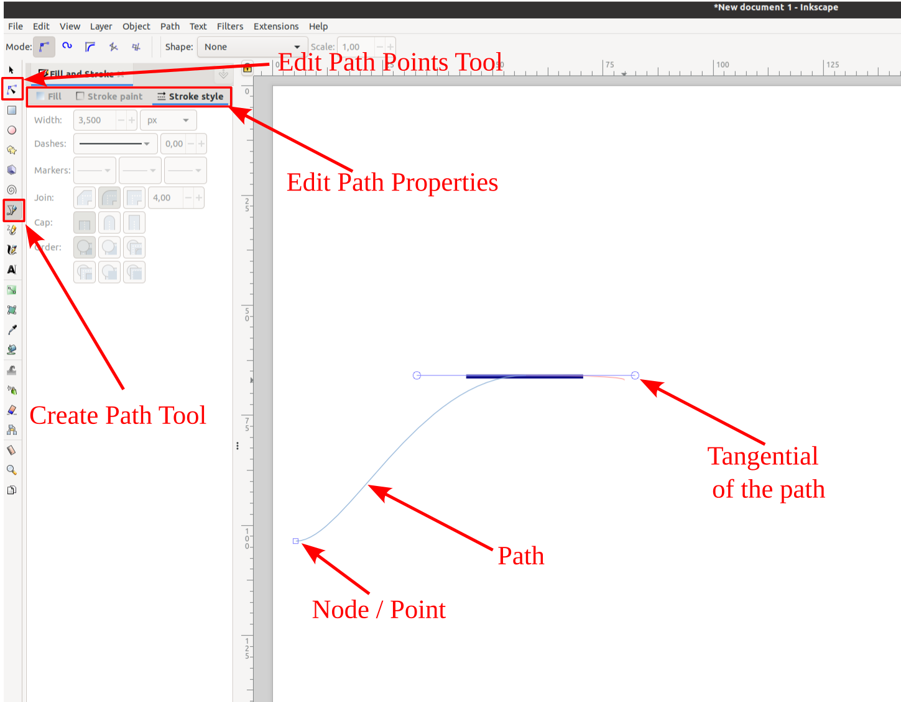
Alignment¶
Amongst other things, alignment and snapping are very powerful in Inkscape. Which allows to fine tune any image.
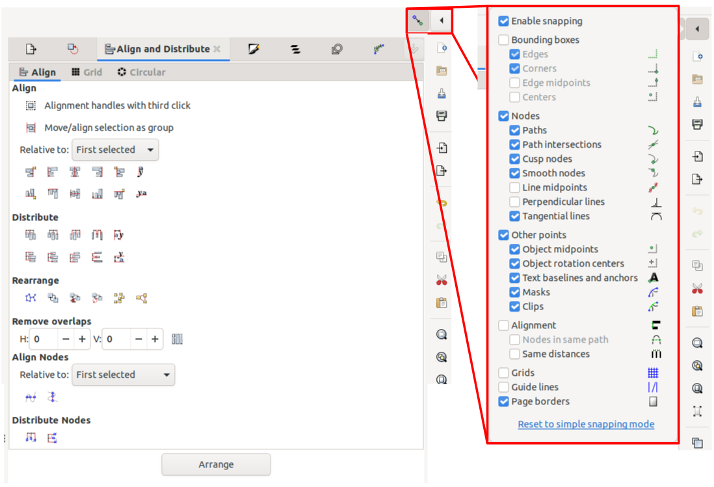
Changing-selecting colors¶
The color picker of Inkscape is very convenient
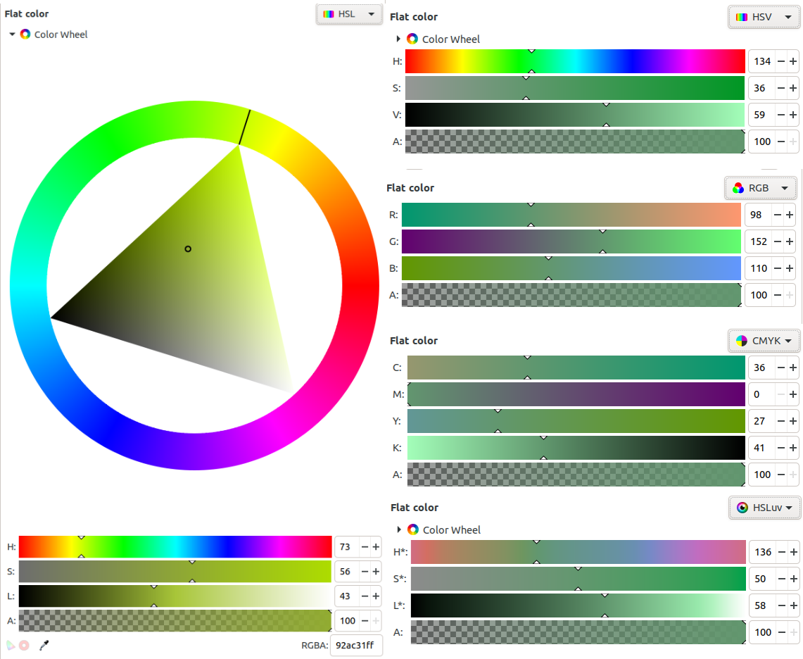
and has interesting things such as color averaging so it ends up being a really convenient tool for creating color palettes.
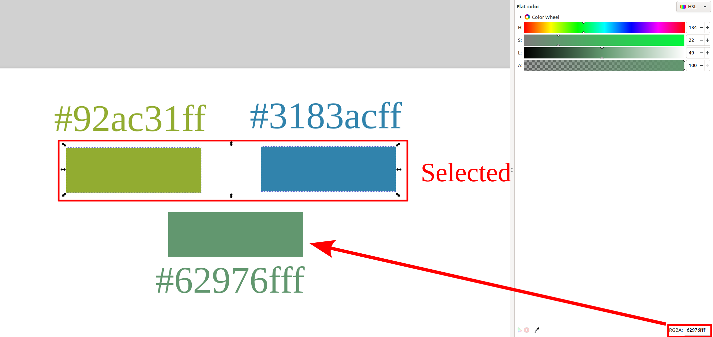
Here we have an example of a color palette created using inkscape.
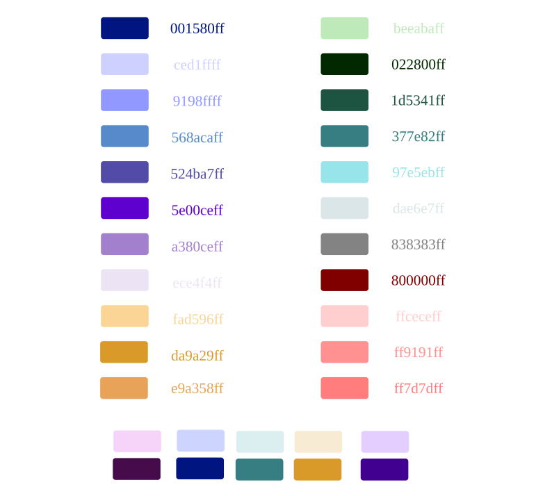
Note
It is a good idea to keep all your colors with their hex notation in a file when writing a longer document and everytime that you select a new color add it there. You will easily be able to translate that color to any color scheme (RGB, HSV, HSL, ...) with Inkscape and will also help when selecting colors for figures.
Creating gradients¶
Inkscape allows to create gradients very easily as well as to fine-tune them. This is very useful when creating custom gradients for pymol or matplotlib as you can visualize on real time the gradient that you are creating and you can easily extract the html notation of each of the colors.
Also if you factor in that you can average colors merely by selecting them if your gradient has a very drastic change, you can easily select an average value to smooth it.
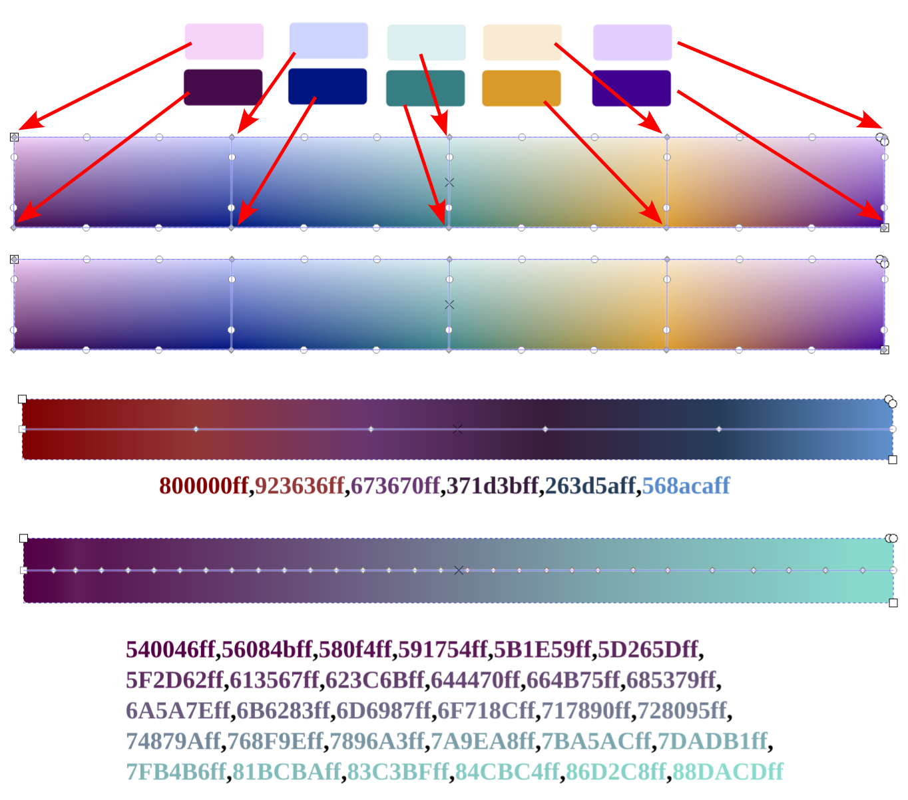
Path effects¶
The world of the path effects in inkscape will get you to follow a white rabbit that is late into a rabbit hole that leads to Wonderland.
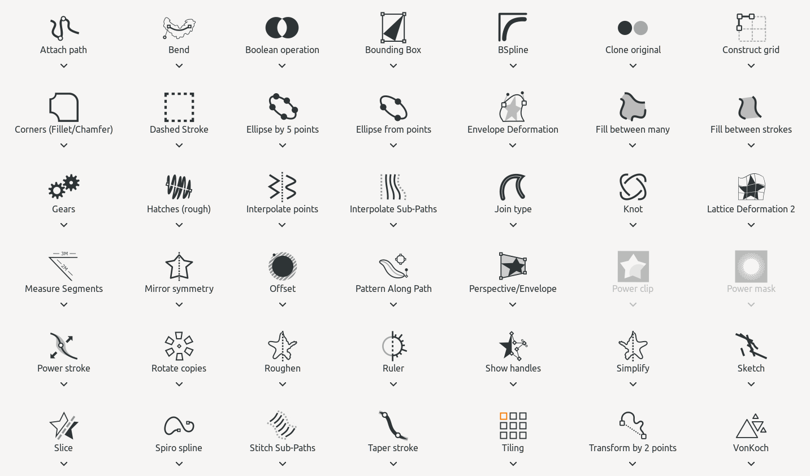
The path effects can simplify the creation of images by a lot. Here we can see and example of how we can stack different path effects to create a figure.
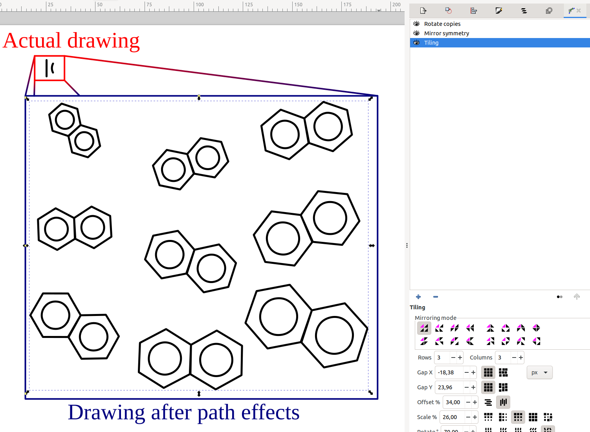
Clipping¶
In inkscape we can easily crop images or other paths/figures without being restricted to rectangular shapes by using clipping.
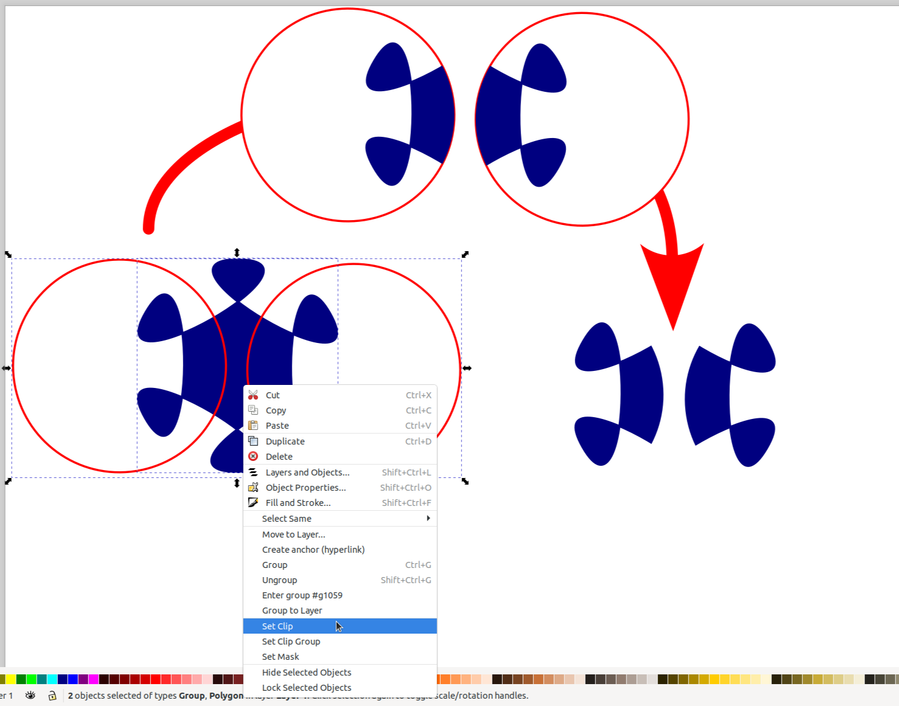
Exporting to png¶
Finally one of the major reasons to use svg is that we can always easily increase the quality of any svg drawing when exporting to a png that will be included in our manuscript/poster.
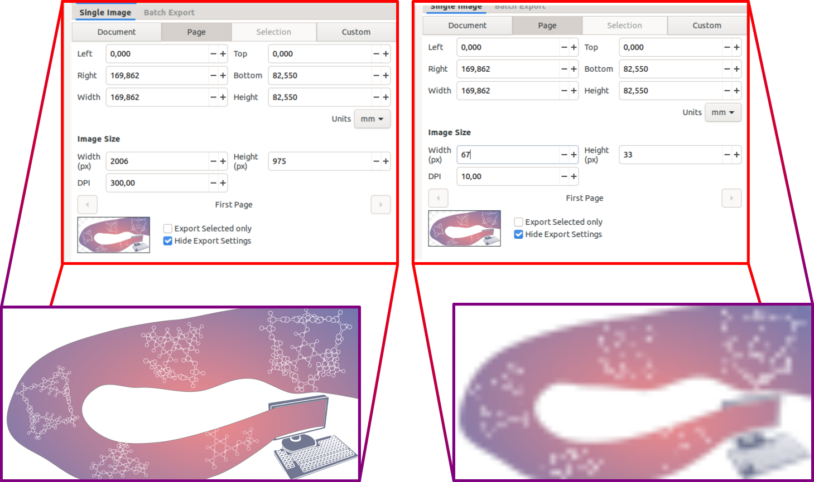
Animating a plot for slides Rainbow color a chemdraw
Combining Inkscape and GIMP¶
One great advantage of using Inkscape and GIMP instead of other software is that these are compatible with each other, that means that we can create a path in Inkscape, copy it with ctrl+C and paste it into our GIMP canvas. Then in GIMP we can trace the path with any of the multiple brush-like tools and compose an image using it. And if we later wanted to clip that image in a specific manner we can copy it and paste it back into Inkscape.
Lets see an example! First were are going to generate a path using Inkscape from the contourn of a molecule (ray_trace_mode 2 of pymol):
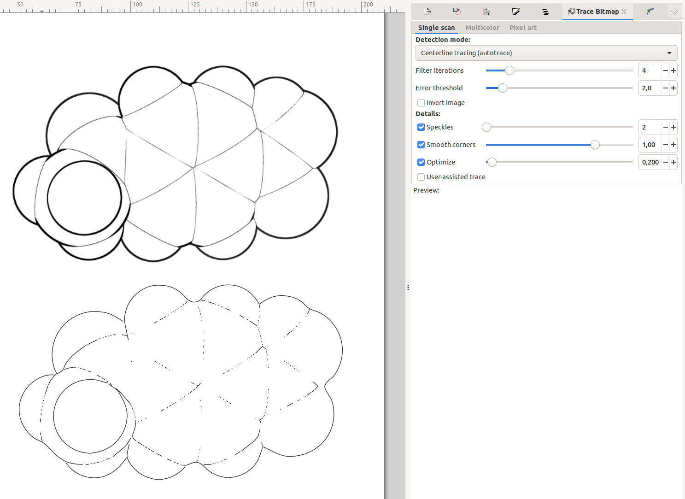
Above we se the original image and on the bottom we see the path generated with the parameters specified in the rightmost pannel. By default all the lines are considered the same path, we can split them by pressing ctrl+shift+k to separate them, then select only the ones that are interested, and group them into the same path by pressing ctrl+k. Now we select such path and copy it (ctrl+c) and paste it into a GIMP window.
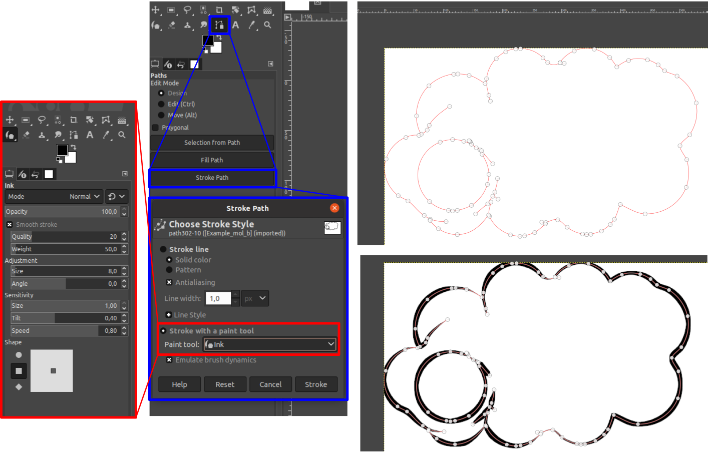
In this image we see the pasted path on top. On the leftmost panel we have the specific setup of the ink tool of GIMP used. In the middle panels we have the path toolbox of GIMP as well as the stroke path window. When we finish specifying the details we can push "stroke" and we will end up with the contourn drawn in the bottom-right panel.
The path will be painted in whatever layer we are currently in. Now we can compose the layers however we want or we can re-trace the path with other brush tools to try different effects. Here we can see a few examples.
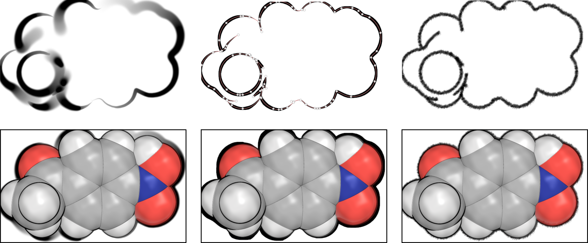